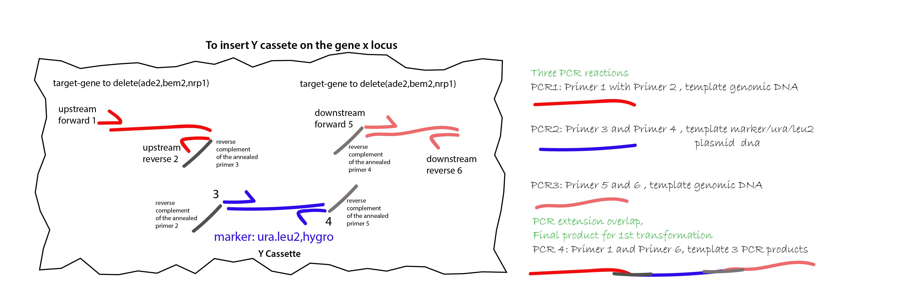
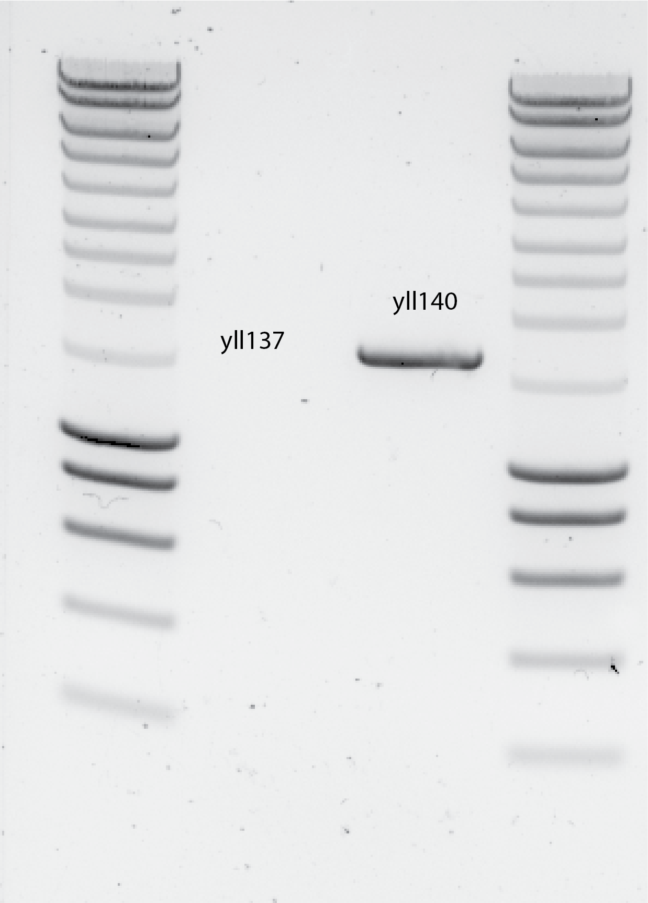
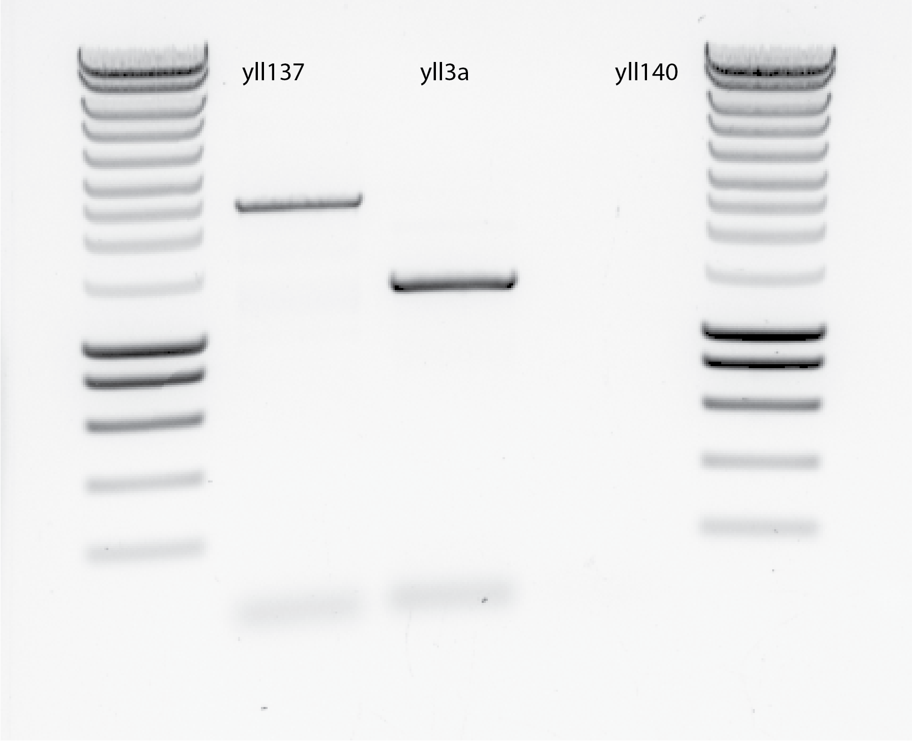
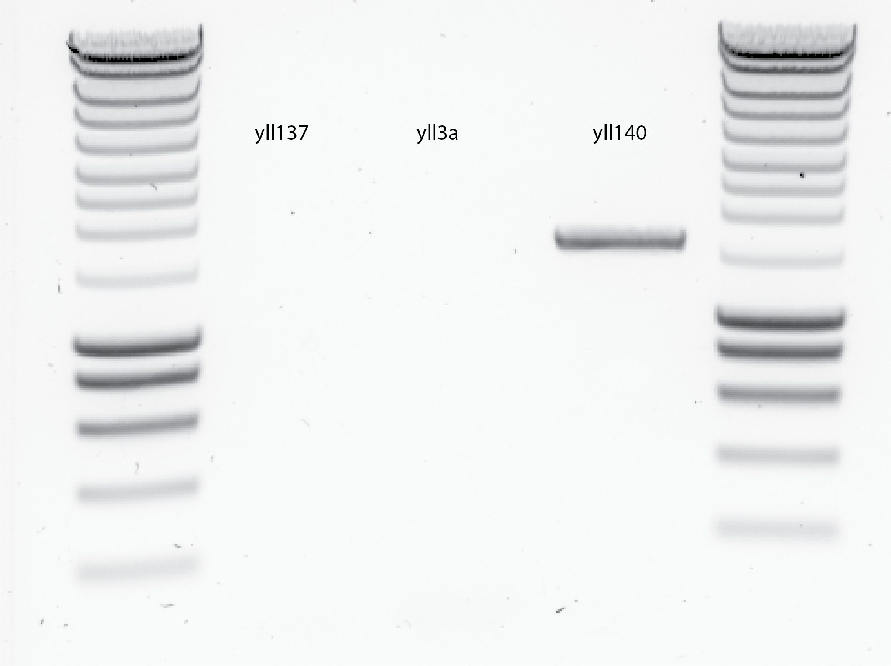

5. Title : Design of the genomic transformation to make dnrp1 and dbem2 strains usable for SATAY¶
5.1. Date¶
09022020
5.2. Objective¶
To design an strategy to make the following strains, in order to test SATAy on them :
\(\Delta nrp1\) ura3- ade2-
\(\Delta bem2\) ura3- ade2-
5.3. Method 1¶
PCR the genomic prep of yll137 with primer 1 and 6 for nrp1 deletion and transfrom it to ylic133
PCR the genomic prep of yll140 with prmer 1 and 6 for bem2 deletion and transform it to ylic133.
Pros: less PCRs
Cons: I have to do two genomic preps.
The strategy is to delete nrp1 using the HYGRO cassette and bem2 in the leu2 locus as Liedewij has in her strains, in my ylic133 strain.
The procedure using Method 1 is as follows:
Perform a PCR using primers 1 and 6 for each gene (nrp1 and bem2) in yll137 (for nrp1) and yll140 (for bem2).
Try to get around 3ug of DNA after PCR for each strain to ensure plenty of transformants.
Transform it into ylic133 each fragment separately.
Check the integration by plate.
5.4. Method 2¶
Pros: No genomic preps
Cons: I have to do 6 more PCRs!!!.
The procedure consists on:
Perform an Overlap Extension (OEP) PCR in order to get a DNA fragment in high concentration to insert in ylic133 and kick out the nrp1 and bem2 gene by replacing the HYGRO and LEU2 markers, respectively.
The sequence for designing the primers is taken from SGD, in the sequence tab of the gene of interest to delete and its chromosome.
First download the CDS genomic sequence of the gene of interest.
Then ,download the sequence of the chromosome of the gene of interest.
Open SnapGene and import the chromosome sequence and search for the sequence of the gene of interest.
Add the corresponding feature that says that in that location is where the gene X is in the chromosome.
Note the gene start with ATG which is the start codon Methionine and ends with a stop codon ATT.
Start designing the primers!
5.4.1. Procedure to design the right primers for the OEP:¶
{#fig:primer-design}
In general :
Primers should end with a G or C nucleotide.
Avoid AAA or TTT in the primer design because this may cause failures in the correct annealing to the template.
Melting temperatures should be from 55C to 60C .
Specific design for this OEP:
primer 1: Upstream primer pointing towards the start of the gene to knock out.
primer 2: Upstream reverse pointing outside the gene of interest. The upstream homology arm (left one) should around 200-250bp. This is the length from primer 1 to primer 2. This primer has to have an overlap 1 that is the reverse complement of the annealed region of primer 3.
primer 3: Upstream primer pointing towards the marker sequence (top strand/bottom strand) in a plasmid ( I am using plasmid 32 HphMX4 for HYGRO and 105 PRS405 ) with an extra overlap sequence that is the reverse complement of the annealed part of primer 2.
primer 4: downstream primer towards the marker sequence (bottom strand/top strand) with an extra overlap sequence that is the reverse complement of the annealed part of primer 5.
primer 5: downstream primer pointing away the end of the gene to knock out, with the extra overlap that is the reverse complement of annealed primer 4.
primer 6: downstream primer pointing towards the end of the gene to knock out.
- 1
The extra sequence should be in front of 5’ of the annealed part of the primer, leaving the 3’ free for the DNA polymerase to work.
PCR reactions:
PCR1: primer 1 and 2 with genomic DNA of ylic133
PCR2: primer 3 and 4 with DNA of plasmid 32 or 105
PCR3: primer 5 and 6 with genomic DNA of ylic133
5.5. Results¶
I did Method 1:
18022020 : genomic prep of yll137 and yll140
I used 1ml of overnight culture for the DNA extraction
I used the vortex at the highest speed for the bead tubes
nanodrop: Low DNA concentration…
Strain
DNA
A260
A280
260/280
260/230
yll137
8.3 ng/ul
0.166
0.082
2.02
5.36
yll140
12.3 ng/ul
0.246
0.125
1.97
3.46
PCR using primer 1 and 6 for nrp1 and primer 1 and 6 for bem2 in 1ul of DNA template for yll137 and yll140 respectively.
The expected length for the PCRs are :
2426bp for the case of nrp1::HYGRO
2239bp for the case of bem2::LEU2
In the protocol with Phusion Polymerase I should use around 1 min o elongation time, because this polymerase extends 1kb per 20secs.
Protocol (1h-50mins):
5 mins in 95C, 1 min 72C 35x cycles hold 10C
19022020- DNA gel
Results , see @fig:dna-gel
{#fig:dna-gel width=50%}
The DNA gel is showing I dont have any product for yll137 PCR :(
Possibles causes:
Low template concentration (8.3ug)
High anneling temperature (60C )
The size for the yll140 band is bellow the expected one , after the estmation done in SnapGene, considering that the leu marker needs 200bp around it for both promoters. Maybe that is the correct size and I was overestimating the size of the promoters.
[ ] Next step is sequencing this PCR product , to know what is actually there.
5.5.1. Next round¶
Repeat PCR for yll137 with 10ul of template and 58C for annealing temperature. See results in @fig:blank-gel
Include a positive control (yll3a) with the same primers 1 and 6 for nrp1 locus amplification.
Include a PCR for yll140 , for later sequencing.
 {#fig:blank-gel width=50%}
{#fig:blank-gel width=50%}I return my PCR samples to another PCR round using the 1st Protocol with the anneling temperature in 60C, and I added 0.5 ul of Phusion to each sample.
By mistake I put 5ul of Phusion in yll137 PCR tube !!! (that was after 6pm!!!) Here the results, see @fig:overnight-PCR:
{#fig:overnight-PCR width=50%}
yll3a bands is not correct, the expected size should be around 2700bp and is below 1500bp.
For yll137 the expected band should be around 2400 bp, considering the Hygro cassette of plasmid 32 HphMX4 is in Liedewij strain yll137. The actual band is close to 2500bp, so maybe it is correct.
3rd run using a TouchDown PCR , see explanation here
It is a method for increasing specificity of PCR reactions. Touchdown PCR uses a cycling program where the annealing temperature is gradually reduced (e.g. 1-2°C /every second cycle). The initial annealing temperature should be several degrees above the estimated Tm of the primers. The annealing temperature is then gradually decreased until it reaches the calculated annealing temperature of the primers or some degrees below. Amplification is then continued using this annealing temperature.
I used 10ul template of yll137 , 2ul of yll140 and 1ul of yll3a.
Results , see @fig:touch-down-PCR …
{#fig:touch-down-PCR width=50%}
- at least yll140 work and give the same size as the 1st time. - No idea why the rest did not work..
PCR done by Els (succesful :)) , from the lab, using her set of primers , oES83 and oES84.
10ul of PCR was used for gel imaging.
40ul is left for clean up.

After clean up , the DNA concentration was:
PCR |
DNA |
A260 |
A280 |
260/280 |
260/230 |
|---|---|---|---|---|---|
yll137-83/84 primers |
73.3 ng/ul |
1.46 |
- |
1.83 |
2.23 |
yll137-SPY primers |
89.9 ng/ul |
1.79 |
- |
1.85 |
2.18 |
5.6. Conclusion¶
Something is weird about my primers for yll137- nrp1::hygro amplification , that do not make the right product in the PCR reaction.